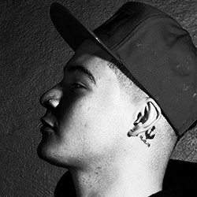
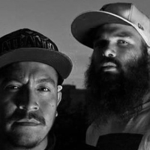
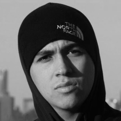

Biografia

Gerardo Daniel Torres Montante nace el 15 de julio de 1994 en la colonia de San Nicolás de los Garza en Monterrey, Nuevo León, a los 2 años se muda con su madre y hermana a la ciudad de San Luis Potosí por problemas familiares. Desde muy temprano le llamo la atención ese tipo de ritmos gracias a un disco de Molotov y algunas canciones de Control Machete, fue entonces que entre sexto de primaria y 1ero de secundaria comenzó con el arte de improvisar e intentar algunas rimas para hacer reír a sus compañeros de clase o hacer más corto el camino a casa de la abuela.
Fue un poco desesperante saber en qué se convertiría Gerardo Daniel ya que en cada secundaria que pisaba era expulsado, a veces por su culpa otras no tanto, fue demasiado difícil que con tantos problemas económicos en casa mamá pudiera confiar en que sería un buen rapero nacional, el proceso fue muy largo y tenso, demasiadas batallas, eventos de telonero, freestyles en la calle, trabajos de medio tiempo para completar algo de gasto en casa, todo esto nublaba un poco más el panorama para poder seguir su sueño.
Pasó algunos años bajo la rutina, trabajo, escuela y canciones sin audiencia, después por amistades no tan buenas es involucrado en problemas de pandillas que hicieron que volviera a Monterrey donde cursaría la preparatoria. Es ahí donde conoce a varias personas que fueron de gran ayuda para su carrera como: Brian terrazas (Renko) que fue quien le dio su primer disco de rap original y todos los cimientos para escuchar algo nuevo y fresco, después conoce a su principal arma y mano derecha Marco Mendoza (Teeam revolver), que sin pensarlo dos veces y esperar nada cambio, confió en el proyecto apoyando con ritmos y una pequeña maqueta titulada “Comienza la función” haciéndolo parte de un crew local llamado “Reprimidos clan”, al poco tiempo llego quien para muchos es el principal sensei de Gera , Julio Vega mejor conocido como Rhinox quien lo animó a meterse a batallas locales y grabar unos temas con él, fue ahí cuando pudo mostrar un poco más la habilidad y las ganas guardadas durante mucho tiempo, él mismo confiando en él lo propone para el reconocido sello Mexamafia uno de los crews más firmes y grandes de todo México, con la aprobación y apoyo de Tanke, Amenaza, Tabernario, Papiros y demás miembros.
Es así como comienza la historia del cachorro de la mexa. Pasaron algunos temas con poca audiencia, viajes, eventos siendo la segunda voz de Rhinox. En el último semestre de preparatoria antes de que regresara a la ciudad que lo vio crecer conoció a Oscar salas (Razor) y su mejor amigo Leonardo Dueñas (Jhapeck) que le brindaron su amistad y apoyo al proyecto de Gera MXM donde nace Inzolentes y el disco por el que muchos conocieron al cachorro: “Precipicio”.
Este disco, tiene una historia muy noble y real, ya que al volver a casa de su abuela tenía que aportar algo y el empleo era muy escaso, es por eso el nombre del mismo, ya que esto tenía que funcionar y confiaban en que así sería, como un todo o nada, ya que hay una frase que para Gerardo siempre será recordada por siempre, sabias palabras de su abuelo: “Negocio que no da números es mejor dejarlo”.
Después de meses de trabajo y desesperados por saber la respuesta de la gente, fue la gran sorpresa que obtuvo muy buenas críticas, subieron los plays, realizó eventos pequeños pero todo marchaba un poco mejor. Siguieron trabajando duro y en equipo, Gera siempre quiso tener y mantenerse con los mismos jugadores, confiaba demasiado en ellos, Teeam Revolver (beat maker) y Razor (productor).
Fue lento pero muy agradable el camino. Después de unos semestres en la universidad, Gera decide probar suerte en Guadalajara en donde, con el apoyo de Carlos Miguel (Charles Ans) y Sinuhe Villalvazo (Dj Loki), comienza a trabajar en equipo, ya que los tres perseguían el mismo sueño. Los tres comenzaron a obtener fechas mejor pagadas y ya veían claro el panorama. Es entonces que se abrió una gran puerta y oportunidad (que luego se convirtió en familia): Joker Brand México y Santa Suerte deciden apoyar el proyecto codo a codo proporcionando producciones de video, vestimenta y personal a Gera MXM (las marcas con las que trabaja hasta hoy en día).
El proyecto se pensó bastante tiempo, se recolectaron beats de todo el país y fue cuando decidió lanzar su primer material original muy completo titulado: “No veo, no siento” trabajado con ayuda de Revolver y Dj Loki, un logro personal y muy grande para Gerardo por la respuesta de la gente. Sabiendo de la colonia y calles de las que proviene el rapero de 20 años que de San Luis Potosí, en el proceso hay dos equipos muy importante que fueron los que terminaron por darle brillo a sus temas: “Suru Producciones” y “El chiste es hacer” con quienes trabaja actualmente todos sus audiovisuales por la gran armonía, amistad y calidad que han demostrado en cada proyecto.
Gmxm
Biografia

Entre un par de gallos y Millers, la historia se remonta por allá del 98, desde el kinder Mü y Zupreeme se conocen comenzando con el proyecto sin saber realmente cuáles serían sus logros pero sin quitar el dedo del renglón, siempre con el afán de ir adelante, Ciudad Constitución, Baja California Sur el primer testigo.
La escena en este sitio ha mejorado bastante, y sí, Banda Bastön ha sido la principal influencia para este crecimiento; el hip hop y el rap siempre llamó su atención. En aquellos tiempos esta música era la propuesta alternativa, lo que no todos volteaban a ver, no hay comparación con el interés en estos géneros ahora y antes.
Justo a la old school, el dúo escuchaba sus cassettes, mientras componía beats y escribían, con ‘Dinero para las estrellas’ descubrieron que cada quien era mejor para algo, uno tornamesas y el otro para las líricas.
¿QUÉ LOS DEFINE?
Nuestro cometido es hacer rap comprometido con el conocimiento adquirido’.- Kilos de Rap
Este rap inteligente proveniente del conocimiento y la sabiduría, proviene principalmente del padre de Mü, quién le inculcaba conocimientos al azar, en especial políticos. Él sin saber qué hacer con ellos en su momento, aprovecharía después el dominio del tema para formar una perspectiva y visión sólida de la vida y lo que ocurría en nuestro país.
Sin embargo, a qué músico no ‘lo mueve’ o motiva la idea de ser como alguna de las figuras públicas de la época, Cypress Hill, DaMexakings, Gangsta, Control Machete y más fueron sus principales influencias, Mü y Zupreeme comparten hasta la fecha canciones como en aquellos tiempos en que intercambiaban cassettes.
Tú vas por la vida aprendiendo cosas y con el conocimiento tienes de dos sopas: o lo compartes, o te haces pendejo. Si te haces pendejo, tú sabes que te estás haciendo pendejo y eso es peor, cuando tú sabes algo y no lo dices, vives con la soga al cuello dentro de ti, la otra es que ese conocimiento que tienes lo vayas compartiendo, depende cómo.
Antes suponía muchas cosas, pero hoy ya tengo de ellas la certeza.-Mü
EL AHORA
Todo Bien, no es su ópera prima sin embargo es ese esfuerzo de cinco años y retos que los dio a conocer, ‘Me Gustas’ sólo es un fragmento del éxito y crecimiento que la escena y ellos han tenido. Gracias al ruido, se han abierto espacios, no sólo ellos han crecido en este periodo en que esta música está regresando con tanta fuerza, por ello se han hecho de amigos, allegados y colegas, siempre se imaginaron que se escucharían en la radio.
Tino el Pingüino, Simpson Ahuevo, son sólo algunas de las personalidades que han crecido con ellos, éste no fue sencillo, siempre hay que comenzar desde abajo.
Mü & Dr Zupreme
Biografia

Carlos Martínez, nacido en el año de 1986 en Los Ángeles, California, Estados Unidos es un joven que a 15 años de edad, perdido entre una multitud de efebos buscando su identidad en el año 2000, simpatiza con el rap desde el primer momento que lo escucha. Cuando algo te interesa optas por indagar y adentrarte en ello, pues fue así como este bastardo empezó a buscar grupos con los cuales satisfacer sus necesidades auditivas sin idea alguna de que un día llegaría a rimar. Después de 3 años de estar sumergiéndose en este género, de estar estudiando sus componentes, su historia e investigando sobre más representantes de esta cultura llamada hip hop, Carlos comienza a sentir más fuerte la atracción a esta música, entre momentos decadentes, tormentos, alegrías y ganas de ser, descubre un MC, llamado Mexicano 777, con el cual se identifica en una forma eufórica de expresarse, el hambre por sacar esa personalidad dura que siempre mantiene furtiva lo lleva a escribir sus malestares sobre cuadernos para después recitarlos, tomándolo como una forma de desahogo. Sus influencias fueron Mexicano 777, Bone Thugs and Harmony, Wu-Tang Clan, Redman, La Alta Escuela, pasando después a Sticky Fingas, Big L, Das Efx, Fu Schnickens, Demian Marley,Method Man, Busta Rhymes y Gravediggaz. El sigue avanzando en esto y al ir incursionando cada vez mas en ese ambiente, se decide a intentar hacer rap.
En el año 2003, entre Internet, calle, escuela y soledad, conoce personas con las cuales comienza a interactuar e intercambiar ideas. A principios de ese año conoce a través de la red a un sujeto con el sobrenombre de Chuko, con el cual pacta y acuerda un proyecto, comenzando a grabar muy austeramente en casete. Así mismo, en octubre de ese año también comienza a practicar el Freestyle. Entrenando y experimentando, sus primeras rimas fueron al lado de Chuko en un dueto llamado Philo.
Después de experiencias y esfuerzos, T-Killa y Chuko forman un colectivo llamado Street Army, reclutando así a más MC’s tratando de mejorar su estilo.
2004 es el año en el que T-Killa inicia un sesgo por su propio rumbo, grabando una maqueta el solo, la cual bautiza como Demo, adentrándose mas al rap y empezando a ser invitado a fiestas en patios, deportivos, y eventos de rap clandestinos para mostrar sus rimas. En el año 2005, T-Killa deja Street Army y decide hacer su propio sello y crew, llamado INKisizion (INK). En este año graba una segunda maqueta llamada Teknica, mostrando su estilo un poco mas definido con ritmos crudos y algo lúgubres. 2006 es el año en el que T-Killa sigue con el hambre de hacer mas rimas grabando una tercer maqueta llamada Atake, la cual lleva más firmeza tomando más en serio lo que se está haciendo y abriéndose puertas en cuanto a más escenarios. En el mismo año T-Killa gana un concurso a nivel nacional de improvisación elaborado por Red Bull, llevando así más allá su ímpetu por destacar. En el año 2007, después de haber forjado un principio y de hacer reflexión sobre sus errores y defectos, se comienza a abrir más el panorama tomando gusto en otros géneros cercanos al rap, entre presentaciones mas notorias en lugares variados y haciendo un pequeño cambio en si mismo. El 2008, más seguro de si mismo y con la mente mas abierta, T-Killa graba dos maquetas en el mismo año, llamadas ZKIT-E y posteriormente El Baul a sabiendas de que aun no se encuentra listo para un trabajo profesional y al mismo tiempo siendo un poco más constante.
Ya con unos años de experiencia, T-Killa incursiona en los ritmos del reggae y el trip hop, experimentando y trabajando en maquetas. Actualmente se prepara para sacar a luz un trabajo minucioso y más severo, un LP donde propone exponer un estilo más propio y más conciso, esperando aportar algo bueno a sus seguidores y al movimiento del hip hop mexicano.
A.K.A.
Carlos toma el sobrenombre de T-Killa proyectando en su apodo un significado ambiguo con algunas características de su vida. T es una letra del alfabeto, letras con las que se forman palabras, palabras con las que se forman oraciones, oraciones con las que se forman frases capaces de provocar emociones. Killa (asesino en Inglesbritánico. En conjunto podría definirse T-Killa (la T asesina, tomándolo en cuenta en un lenguaje competitivo sobre la escritura). Al pronunciar el nombre suena Tequila, un destilado, representativo de México.
Las ideas principales del sobrenombre son dar a notar la procedencia de este MC, ya que nació en Los Ángeles, California, Estados Unidos pero criado en México, D. F., México. Por eso es que el nombre está escrito con una mezcla de inglés y español y el sonido al pronunciarlo le da otro significado con algo representativo de donde habita.
INKISIZIÓN (INK)
Aproximadamente en febrero de 2005, por un proyecto que comenzó T-Killa seguido por Achepe, decidió hacer su propio sello y crew, llamado INKisizion (INK) (que también significa Ideas No Comunes, Impetu Nociva de Kastigo, entre muchos otros) con la esencia de un rap castigador, oscuro, crudo y duro. Posteriormente decidieron reclutar mas MC’s. Un propósito de este emblema fue mostrar algo de cuidado en el ámbito del rap mexicano. INKisizion fue el término mas idóneo para ostentar esas ansias de manifestarse con la música que se adora.
T-Killa
Biografia

MalaFama es uno de los MC y productores más activos en la escena actual del hip-hop mexicano, conjuntando potencia vocal y lírica con sonidos ajenos a la estampa tradicional que caracteriza al hip-hop nacional, logrando así una producción contrastante y consistente muy evidente tanto en sus conciertos como en su discografía.
En 1990 con apenas 12 años de edad, MalaFama se integró al entonces emergente movimiento hip-hop de Jalisco como B-Boy, tres años después comenzó a hacer graffiti, en 1996 inicia con sus primeras rimas mientras vivía en Estados Unidos y un año después regresó a Jalisco para “rayar” los platos con la intención de dominar los cuatro elementos vitales del hip-hop: el baile, la rima, el graffiti y el scratching.
BajoMundo fue el nombre de su primer agrupación en el año 2000, cuyo demo ‘1er Attake’ le impulsaría en la escena local y regional. En 2004 crea -TonoZordo- junto con Dj Loop, proyecto a través del cual comienza su primer acercamiento a un proyecto individual.
En 2006 lanza su primer demo como solista “Con todo que perder” con Inalcanzables Records y un año más tarde publica su segundo demo “De regreso x 1era vez”, composiciones que impulsarían al artista a nivel nacional.
En 2008, tras realizar conciertos en distintos clubes de Canadá, lanza “Entrenamiento”, material que ayudó a mejorar la difusión de su música en el resto de Latinoamérica. Para 2009, MalaFama se había presentado a lo largo de México, el suroeste de Estados Unidos y Canadá, convirtiéndose en un proyecto de calidad internacional y compartiendo escenario con artistas como Psycho Realm, SFDK, Mala Rodríguez, Los Aldeanos, Arianna Puello, Aniki, I-Nesta, Rapsusklei, Violadores del Verso, Randee Acosta y Shariff, entre otros.
Desde entonces ha trabajado de manera simultánea como beat maker para proyectos como DeLoSimple, Golosinomano, Leazzy, RepublicK Central, La Bestia, Kloe, De3s, Toltek y varios MCs de Estados Unidos, Canadá, Brasil, Chile, Colombia, Argentina, España y Portugal.
En 2012 lanza su primer álbum discográfico titulado “La Fakin Actitud”, material en el que se percibe la trayectoria del artista y que fue producido por Inalcanzables Records y Suplex, una división del sello electrónico mexicano Abolipop, dando cuenta de la apertura a nuevas sonoridades, fusiones de y desafíos tanto vocales como líricos de MalaFama. La Fakin Actitud demuestra fuerza, cuestionamiento, confrontación, pero también una celebración de la amistad, del amor y de las calles.
En diciembre de 2013 publica “Bala perdida”, segundo material discográfico físico publicado con Suplex, nominado a los premios IMAS 2014 como el Mejor Disco Rap/Hip Hop del año. Este material es considerado hoy en día un importante documento de la cultura hip-hop latina e incluye colaboraciones de Don Kalavera, Tabernario, Maxo de Inalcanzables Records, SoulMind, TwoHats, el sencillo “Hoy” fue seleccionado para formar parte del recopilado mundial de Latin Alternative Music Conference, N.Y. Bala Perdida es un álbum para escucharse en los audífonos al transitar por la ciudad, en reposo en casa, compartiéndolo con los colegas del trabajo y, por supuesto, en una catártica sesión en vivo.
MalaFama
Biografia
Erick Raúl Alemán Ramírez, nace el 20 de febrero de 1990, en Cabo San Lucas, Baja California Sur.
Comenzó a adentrarse en el rap a los 14 años de edad junto a su amigo de la infancia MC King con quien forma un grupo llamado “2 Rimas”, un año después conocieron a DJ Phat que se unió al grupo y cambiaron el nombre a “Doble Rima”, y lanzan un álbum titulado “Click Clack Punto Exacto” en el año 2009.
En el 2010, MC King decide tomarse un break, por lo que DJ Phat y Alemán continúan el proyecto, y un año más tarde sacan un nuevo material discográfico titulado “Clasick Rap” siendo este el trabajo que les abriera las puertas en toda la República Mexicana.
Posteriormente en el año 2013, Alemán empieza a trabajar en el disco “Pase de abordar” en el estudio “Ometusco Sound Machine” en el Distrito Federal, siendo DJ Phat el encargado de los arreglos de la producción discográfica, y que fue lanzado a mediados del 2014, y que está considerado uno de los mejores discos del año.
Entre sus canciones más relevantes destacan: “La doble rimaldita”, “Rap Phenomenon”, “Por el Pacífico”, “Hip Hop Deporte”, “Otro día” (ft Gera MXM), “La cuadra está caliente”, “Esta noche”, “Let me fly” y “El tin tin”.
A lo largo de su carrera se ha presentado en distintas ciudades del país como Aguascalientes, San Luis Potosí, Puebla, Guadalajara, Ensenada, Los Cabos, La paz y Distrito Federal.
Aleman